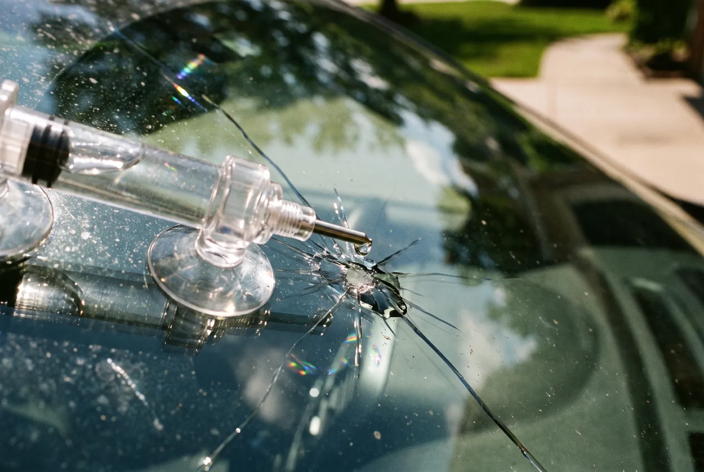

Resin injected under vacuum so the chip stops spreading. Half an hour on your driveway, and usually no deductible.
Call Now for a Free QuoteTell us the vehicle and the damage — we’ll come back the same working day.
Prefer to talk? Call (256) 699-0625

Windshield chip repair in Decatur takes about half an hour and, for most drivers carrying comprehensive coverage, costs nothing out of pocket. Resin is drawn into the fracture under vacuum, cured with UV light, and the chip stops spreading. It is the cheapest job in auto glass and the one people put off longest.
The break gets cleaned and any loose glass picked out of the pit. A bridge with a suction-cup base is mounted over it and the chamber is pulled down to a vacuum, which draws the air out of every leg of the fracture. Air left in the crack is what makes a bad repair stay visible.
Resin is then injected under pressure so it fills the void the air just left, cured with ultraviolet light, and the excess scraped flush and polished. The repair restores the strength of the glass and usually takes the damage down to a faint mark you have to hunt for.
Miss any of those and it becomes a replacement. Edge damage is the one people argue about — it looks small and harmless, but the perimeter of the glass carries the stress of the body flexing, so a crack there keeps growing no matter how neatly it is filled.
A chip is a stress riser. Glass expands and contracts with temperature, and every one of those cycles concentrates force at the tip of the fracture. A cold morning with the defroster on full does it fastest, because the outer layer is contracting while the inner layer is being heated.
Rough road, a slammed door and a pothole all add their own shove. This is why the honest answer to “how long can I leave it?” is that nobody knows — it might hold for months or run across the glass on the next cold snap.
Out of pocket it runs roughly $80 to $160. Through insurance it is usually free, and that is not a sales line — it is arithmetic on the insurer’s side.
Alabama does not mandate zero-deductible glass; only Florida, Kentucky and South Carolina do. But most carriers waive the deductible on a repair anyway, because paying $120 now is obviously better than paying for the $500 replacement it turns into. Let the chip run and the same carrier will charge your deductible in full.
| Repair now | Replace later | |
|---|---|---|
| Typical cost | $80 – $160 | $275 – $900 |
| Deductible | Usually waived | Applies in full |
| Time | ~30 minutes | 1–2 hours plus cure |
| Calibration needed | No | Yes, if camera-equipped |
Repair keeps your factory glass and its factory seal, costs a fraction as much, takes half an hour, and needs no recalibration because the camera never moves. When the damage qualifies, it is the better outcome in every dimension.
Replacement is the answer when the damage is in the driver’s view, reaches the edge, or has run too far. It is not an upsell in those cases — a filled crack in the driver’s sightline leaves distortion exactly where distortion matters most.
Send a description of where the damage sits and how big it is and we will tell you which one you are looking at before anyone drives out. If it is a replacement, the windshield replacement page covers what that involves.
About 30 minutes from setup to polish, done wherever your car is parked. There is no cure time to wait out afterwards — the resin is cured with UV light on the spot, so you can drive as soon as it is finished.
Usually it fades to a faint mark you have to look for, not a flawless repair. The structural fix is complete either way; the cosmetic result depends on how much air was trapped and how long dirt sat in the break. A fresh chip cleans up better than one left for months.
The repaired area is restored to close to the original strength and the crack stops travelling, which is the point. It is not identical to unbroken glass, but it holds, and it keeps your factory seal and factory glass in place rather than cutting them out.
Three is the usual working limit in one visit. Beyond that the glass has taken enough hits that its overall integrity is questionable and replacement is the more sensible call, even if each individual chip would qualify on its own.
Most jobs are done in your driveway or the work parking lot. Tell us the vehicle and the damage and we’ll quote it on the spot.